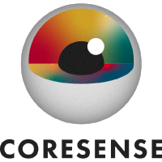

CoreSense 
latest
Getting Started
Installation
Running the Example
Build and Install
Install
Build
Install ROS
Build CoreSense
CoreSense design
Tutorials
Tutorial Dummy
Testbeds
TB2: Inspection Testbed
Setup
Aerostack2 Installation
AS2 project requirements
Inspection Testbed project
Simulation Environment
Execution
Demos
Dummy Demo
CoreSense Toolchain
About and Contact
About
Contact
CoreSense
Edit
Testbeds
Testbeds

CoreSense Testbeds
TB2: Inspection Testbed